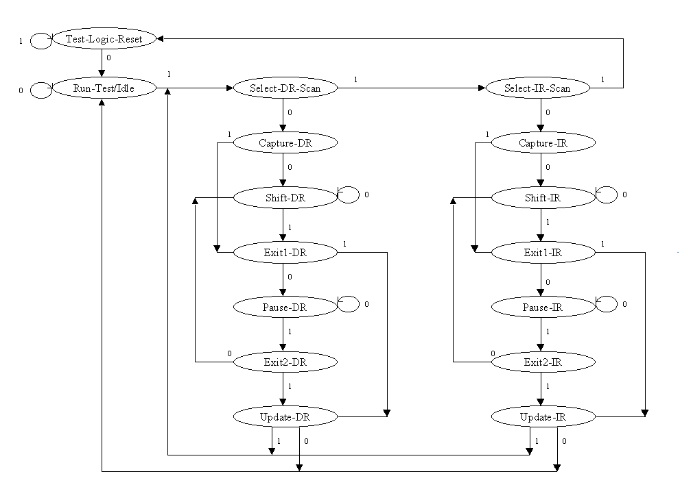

JTAG Protocol Basics
The Joint Test Action Group (JTAG) standard (IEEE 1149.1) is a hardware interface used for testing, verifying, and debugging printed circuit boards and integrated circuits.
The 4-Wire Bus
At its core, JTAG uses four mandatory pins:
- TCK (Test Clock): Synchronizes the internal state machine operations.
- TMS (Test Mode Select): Sampled on the rising edge of TCK to navigate the internal state machine.
- TDI (Test Data In): Serial data shifted into the device.
- TDO (Test Data Out): Serial data shifted out of the device.
The TAP Controller State Machine
Every JTAG-compliant chip contains a 16-state finite state machine called the Test Access Port (TAP) Controller. Navigation through these states is controlled entirely by the sequence of 1s and 0s sent over the TMS (Test Mode Select) signal and occur strictly on the rising edge of the TCK (Test Clock) signal.
Our controller in jtag_controller.py heavily relies on these specific states:
- Test-Logic-Reset (TLR): The safe/reset state. Holding TMS
HIGHfor 5 consecutive clock cycles guarantees a return to TLR from any state. - Run-Test/Idle: A resting state where the TAP is active but not shifting data.
- Shift-IR (Instruction Register): Used to load a command (e.g., Target the FPGA Usercode or the ARM CoreSight DAP).
- Shift-DR (Data Register): Used to read or write the actual data payload based on the active instruction.

As shown in the diagram, the FSM is split into two nearly identical vertical branches:
- Instruction Path (IR): States ending in "-IR". Used to shift control commands into the instruction register.
- Data Path (DR): States ending in "-DR". Used to read from or write to the specific data register targeted by the active instruction.
Global Controller States
- Test-Logic-Reset: All test logic is disabled in this state, allowing the IC to operate normally. The FSM is designed so that this state can always be reached from any current state by holding
TMShigh and pulsingTCKfive times. Because of this built-in fail-safe, a physical Test Reset (TRST) pin is optional. - Run-Test/Idle: The controller waits here. Test logic in the IC is idle unless a specifically activated instruction (such as a built-in self-test) dictates execution while in this state.
Path Selection States
- Select-DR-Scan: A temporary decision state that controls whether the FSM will enter the Data Path or proceed to check the Instruction Path.
- Select-IR-Scan: Controls whether the FSM will enter the Instruction Path or return to the
Test-Logic-Resetstate.
Instruction Register (IR) Path
- Capture-IR: On the rising edge of
TCK, a fixed pattern of values is parallel-loaded into the shift register bank of the Instruction Register. By JTAG standard, the two least significant bits are always loaded as01. - Shift-IR: The instruction register is connected serially between the
TDI(input) andTDO(output) pins. The captured pattern shifts out on each rising edge ofTCK, while the new instruction available on theTDIpin simultaneously shifts in. - Exit1-IR: A decision state to either enter
Pause-IRor proceed directly toUpdate-IR. - Pause-IR: Allows the shifting process of the instruction register to be temporarily halted without losing data.
- Exit2-IR: Controls whether to return to
Shift-IRto resume shifting or proceed toUpdate-IR. - Update-IR: On every falling edge of
TCK, the new instruction is latched into the Instruction Register's latch bank. Once latched, it immediately becomes the active/current instruction.
Data Register (DR) Path
The Data Path mirrors the structural flow of the Instruction Path, but it operates on the hardware data register that was selected by the current instruction.
- Capture-DR: Hardware data is parallel-loaded into the currently selected data register on the rising edge of
TCK. - Shift-DR: Connects the selected data register between
TDIandTDOto shift data in and out. - Exit1-DR / Pause-DR / Exit2-DR: Function exactly like their IR counterparts, managing the halting, holding, and resuming of data shifting.
- Update-DR: Latches the newly shifted data into the target hardware register.
Example: Navigating to Shift-DR
To move from Test-Logic-Reset to Shift-DR, the TMS pin must receive the sequence 0 -> 1 -> 0 -> 0. In our code, this is handled transparently by the _tms_to_shift_dr() helper method.